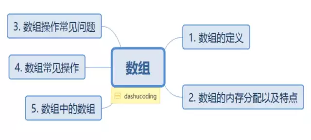
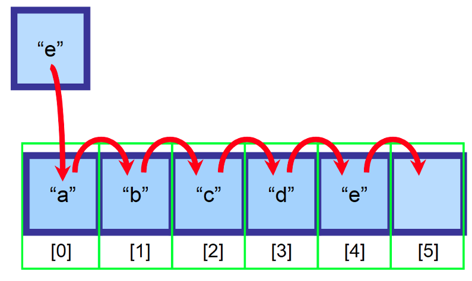

2020-08-08
123

数组--知识点整理
数组
一、基本概念
数组： 所谓数组，是有序的元素序列。若将有限个类型相同的变量的集合命名，那么这个名称为数组名。组成数组的各个变量 称为数组的分量，也称为数组的元素，有时也称为下标变量。用于区分数组的各个元素的数字编号称为下标。数组是在程序设计中， 为了处理方便， 把具有相同类型的若干元素按无序的形式组织起来的一种形式。这些无序排列的同类数据元素的集合称为数组。
1.数组的特征
- 索引(即下标) 一般从0开始，如java, C/C++。
- 长度固定，在申请时长度固定。内存连续，在内存中则是申请一块连续的固定大小的空间。
- 随机访问，能够根据位置(下标)直接访问到元素。
- 数组有一维数组和多维数组，数组元素可以是基本数据类型(Primitive)，也可以是对象引用(Reference)。
2.数组的结构形式
栈内存 在方法中定义的一些基本类型的变量和对象的引用变量都在方法的栈内存中分配，当在一段代码中定义一个变量时， java就在栈内存中为这个变量分配内存空间，当超出变量的作用域后，java会自动释放掉为该变量所分配的内存空间。
堆内存 堆内存用来存放由new运算符创建的对象和数组，在堆中分配的内存，由java虚拟机的自动垃圾回收器来管理。在 堆中创建了一个数组或对象后，同时还在栈内存中定义一个特殊的变量。让栈内存中的这个变量的取值等于数组或者对象在堆内存 中的首地址，栈中的这个变量就成了数组或对象的引用变量，引用变量实际上保存的是数组或对象在堆内存中的地址（也称为对象 的句柄），以后就可以在程序中使用栈的引用变量来访问堆中的数组或对象。
与字段的区别 数组中的所有元素都具有相同类型(这一点和结构或类中的字段不同，它们可以是不同类型)。数组中的元素 存储在一个连续性的内存块中，并通过索引来访问(这一点也和结构和类中的字段不同，它们通过名称来访问)。
二、数组的基本操作
数组的基本操作包括增、删、查、改四种基本的操作。注： 这里假设数组都是无序的
1.插入操作
插入可以分为尾部新增和中间插入两种情况，中间插入元素本质是将 至最后一个索引对应的元素全部向后移动一位。

图 1 数组的插入
不过插入元素时需要扩容。扩容，就是扩大数组的长度。当插入元素时，若发现数组长度已满，此时需要扩容数组，操作为创建一个 新的同类型的数组，长度为原来的2倍，将原始数组的元素拷贝到新数组中，此时即可插入新元素。
def insert(lst, i, e):
"""
插入特定位置的元素
"""
length = len(lst)
if i < 0 or i > length: # 边界值处理,如果插入下标超过数组长度或者插入下标小于0,则视为插入异常，结束算法
print('插入位置超过数组长度,插入失败')
return
our_list = lst[:] # 复制原表，防止原表改变
our_list.append(our_list[-1]) # 扩大列表长度,方便插入元素
for j in range(length - 1, i, -1): # 向后移动元素
our_list[j] = our_list[j - 1]
our_list[i] = e
return our_list2.查找操作
查找特定位置元素
def find_i(lst, i):
'''
查询特定位置的元素
:param lst: 元素数组
:param i: 查询i位置的元素
:return:
'''
if i < 0 or i >= len(lst): # 边界范围处理
print('下标{}超出数组范围'.format(i))
return
for j in range(len(lst)):
if j == i:
return lst[i]
"""
上面只是做下基础演示
最简单的直接就是：return lst[i]
"""
print(find_i(our_lst, 4))
#结果：
#4查找特定值元素
def find_value(lst, e):
'''
查询特定的值e的元素下标
:param lst: 元素数组
:param i: 查询i位置的元素
:return:
'''
if len(lst) == 0: # 边界范围处理,空表
print('数组为空,无法查到元素{}'.format(e))
return
for i in range(len(lst)):
if lst[i] == e:
return i
# 无法查到元素时处理
print('元素{}不在数组中'.format(e))
return3.修改操作
def update(lst, i, e):
"""
更新特定位置i的元素为特定值e,这里在原表基础上改变,即修改原表
"""
if i < 0 or i >= len(lst): # 边界范围处理
print('下标{}超出数组范围'.format(i))
return
lst[i] = e
return lst4.删除操作
移除指定索引的元素本质上是将i+1至最后一个索引对应的元素全部向前移动一位。
def remove(lst, i):
"""
移除特定位置i处的元素
:param lst:
:param i:
:return:
"""
length = len(lst)
if i < 0 or i >= length: # 边界范围处理
print('下标{}超出数组范围'.format(i))
return
if i == (length - 1): # 删除末尾位置的元素时直接删除
return lst[:-1]
our_lst = lst[:] # 防止原表改变
for j in range(i + 1, length):
our_lst[j - 1] = our_lst[j]
return our_lst[:-1] # 这里改变数组的长度三、数组中的异常问题
1.数组索引越界异常
ArrayIndexOutOfBoundsException，指你访问的索引不存在。
int arr = {1，34，234};
System.out.println(arr[23]);2.空指针异常
NullPointerException，指数组已经不在指向堆内存了，而你还用数组名去访问元素。
int[] arr = {1，2，3};
arr = null;
System.out.println(arr[0]);
package com.dashucoding;
public class DemoArray {
public static void main(String[] args) {
// TODO Auto-generated method stub
int[] arr = new int[5];
System.out.println(arr[5]); // 当访问数组中不存在的索引，就会出现索引越界异常.
}
}四、数组的操作
1.数组初始化
数组先开辟内存空间，而后再使用索引进行内容的设置，实际上这种做法都叫做动态初始化，而如果希望数组在定义的时候可以同时出现设置内 容，那么就可以采用静态初始化完成。
| Tables | 简化格式 | 数据类型 数组名称 = {值, 值,…} |
| Are | 完整格式 | 数据类型 数组名称 = new 数据类型[] {值, 值,…} |
静态初始化定义数组
public class ArrayDemo {
public static void main(String args[]) {
int data[] = {1, 2, 4, 545, 11, 32, 13131, 4444};
for(int i = 0; i < data.length; i++) {
System.out.println(data[i]);
}
}
}2.二维数组
二维数组本质上指的是行列集合，也就是说要确定某一个数据需要行索引和列索引来进行定位。
| 索引 | 0 | 1 |
| 0 | 12 | 2 |
| 1 | 23 | 3 |
| 2 | 44 | 41 |
| 3 | 56 | 56 |
| 4 | 90 | 9 |
| 5 | 445 | 45 |
| 6 | 90 | 9 |
| 7 | 78 | 8 |
| 8 | 89 | 10 |
如果要想确定一个数据则数据使用的结构是“数组名称[行索引][列索引]”，所以这样的结构就是一个表的结构。
那么对二维数组的定义有两种声明形式：
- 数组的动态初始化：数据类型 对象数组[][] = new 数据类型[行个数][列个数];
- 数组的静态初始化：数据类型 对象数组[][] = new 数据类型[行个数][列个数]{{值, 值,…}, {值, 值,…},…};
定义一个二维数组
public class ArrayDemo {
public static void main(String args[]) {
//此时的数组并不是一个等列数组
int data[][] = new int[][] {
{1, 2, 3}, {4, 5}, {6, 7, 8, 9}};
//如果在进行输出的时候一定要使用双重循环，
//外部的循环控制输出的行数，而内部的循环控制输出列数
for(int i = 0; i < data.length; i++) {
for(int j = 0; j < data[i].length; j++) {
System.out.print("data[" + i + "][" + j + "]=" + data[i][j] + "、");
}
System.out.println();
}
}
}
Comments
回复
回复
回复
回复